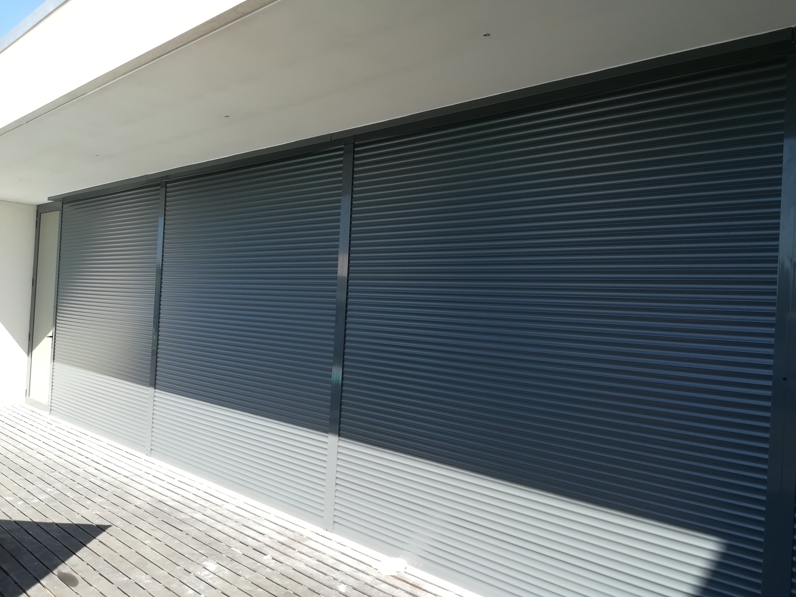
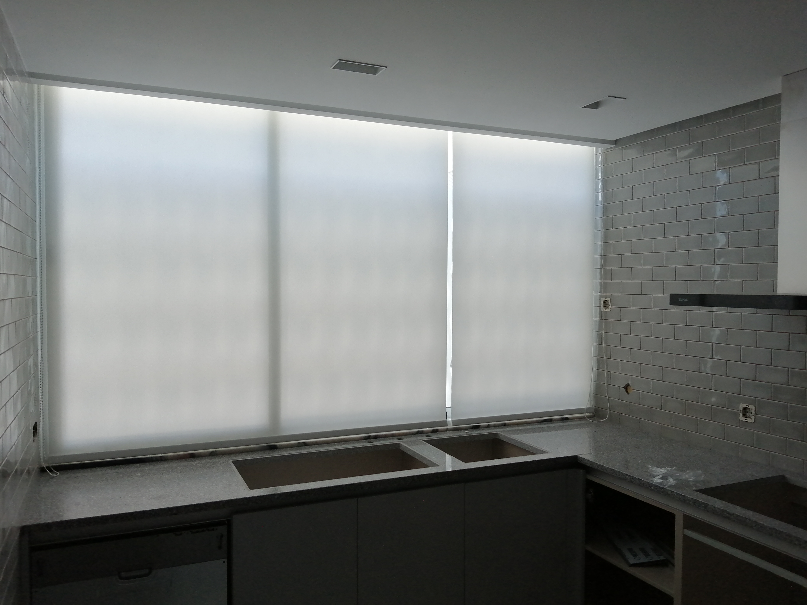
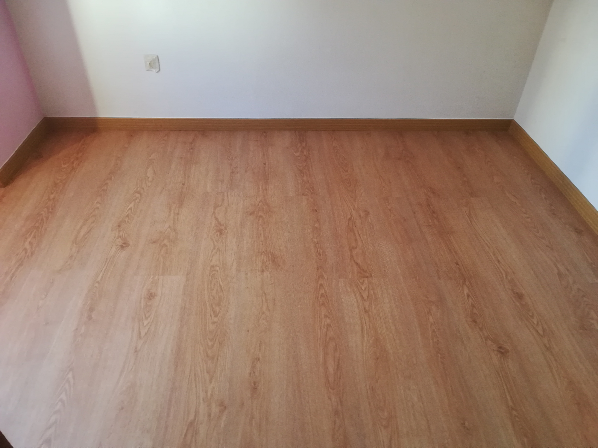
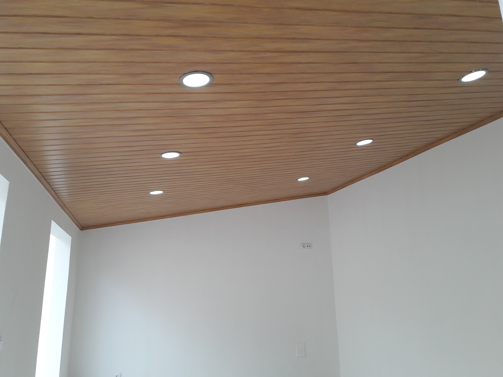
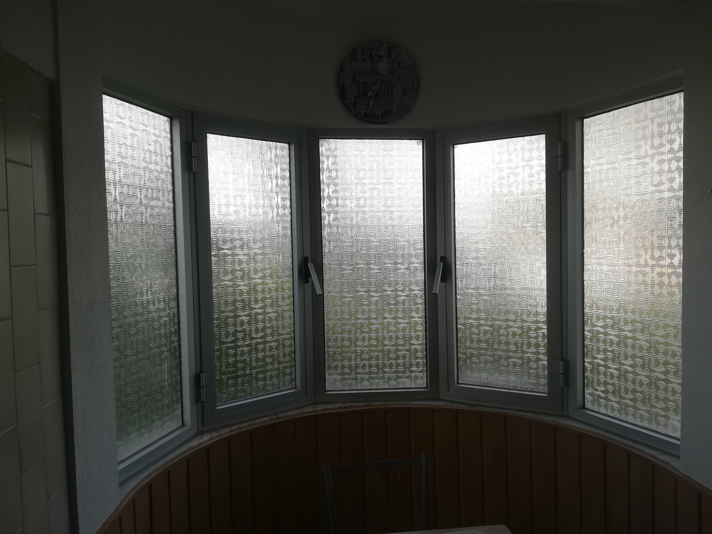

Soluções em Estores, PVC e Conforto para Sua Casa ou Empresa
Atendemos Soure, Coimbra e toda a região centro com mais de 30 anos de experiência em estores, tetos falsos, revestimentos e produtos inovadores para ambientes residenciais e empresariais. Qualidade, personalização e instalação profissional.
PRODUTOS E SOLUÇÕES
Estores e soluções completas para conforto, proteção e design
Oferecemos uma vasta gama de estores e sistemas modernos, desde opções económicas em P.V.C. até soluções térmicas, blackout e motorizadas. Trabalhamos com materiais de qualidade e tecnologias que garantem isolamento, controlo de luz e eficiência.
Quem Somos
A Estorvalente, Lda, foi criada com base numa empresa familiar e conta com mais de 30 anos de existência na montagem de estores, aplicação de flutuantes, tetos falsos PVC, revestimento de paredes em PVC e gesso cartonado, entre outros trabalhos.
Dispomos de produtos inovadores, decorativos e de grande qualidade, procurando sempre personalizar e adequar as necessidades dos nossos clientes às melhores soluções do mercado.
Com profissionais qualificados, prestamos serviços de assistência e manutenção dos produtos comercializados.
TRABALHOS REALIZADOS
Imagens reais dos nossos projetos
Veja exemplos reais dos nossos trabalhos em estores, tetos falsos e revestimentos, com qualidade e acabamento profissional.






Ainda está com dúvidas?
Fale connosco e descubra a melhor solução para o seu espaço. A nossa equipa está pronta para ajudar com aconselhamento e orçamento sem compromisso.
QUERO FALAR COM A ESTORVALENTE!